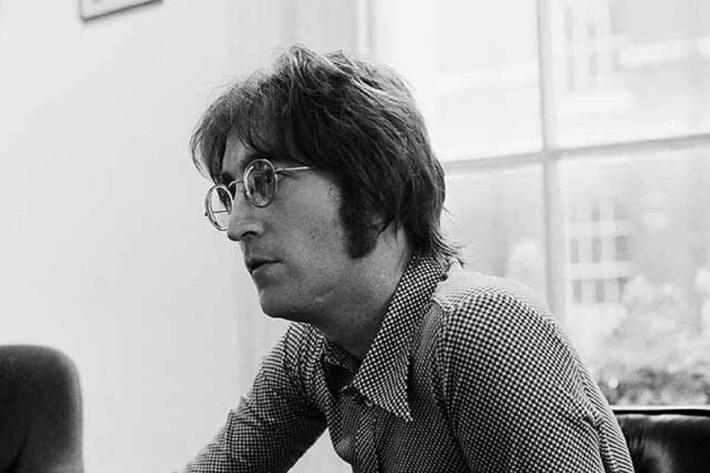

- John Lennon
- John Winston Lennon (Liverpool, 9 de octubre de 1940-Nueva York, 8 de diciembre de 1980) fue un artista, músico, multinstrumentista, cantautor, activista, compositor, productor, escritor y pacifista británico, conocido por ser líder y fundador de la banda de rock The Beatles y considerado uno de los artistas más influyentes del siglo xx.
- Nació en Liverpool, donde siendo adolescente se vio inmerso en el boom británico del skiffle; formó la banda The Quarrymen en 1956, que posteriormente en 1960 se convertiría en The Beatles. Cuando el grupo se disolvió, Lennon inició una carrera como solista en la que publicó varios álbumes como John Lennon/Plastic Ono Band e Imagine, y canciones icónicas como «Give Peace a Chance» e «Imagine»; la mayoría de ellas expresan sus ideas socialistas y pacifistas. Después de contraer matrimonio con Yoko Ono en 1969 cambió su nombre a John Ono Lennon. Se retiró temporalmente de la escena musical en 1975 para criar a su pequeño hijo Sean, pero resurgió junto con Ono en 1980 con el nuevo álbum Double Fantasy. Fue asesinado ese mismo año.
- Demostró un carácter rebelde y un ingenio mordaz en su música, el cine, la literatura y el dibujo, así como en sus declaraciones en conferencias de prensa y entrevistas. Además, la polémica lo persiguió debido a su constante activismo político junto a Ono. En 1971 se mudó a Manhattan, donde su oposición a la guerra de Vietnam y su capacidad de movilizar gente dio lugar a numerosos intentos por parte del gobierno de Richard Nixon de encarcelarlo y expulsarlo del país; mientras, sus canciones fueron adoptadas como himnos de la contracultura y de diversas disidencias.
- Hasta 2012, en los Estados Unidos las ventas de Lennon como solista superaban los catorce millones de unidades, y ya sea como intérprete, autor o coautor, es responsable de veinticinco sencillos número uno en el Billboard Hot 100. En 2002, fue colocado en el octavo puesto en una encuesta de la BBC sobre los «100 mejores británicos», mientras que en 2008 fue calificado por la revista Rolling Stone como el quinto mejor cantante de todos los tiempos. Además, figura como el tercer mejor compositor de todos los tiempos de la misma publicación solamente superado por Paul McCartney y Bob Dylan. Después de su muerte fue incluido en el Salón de la Fama de los Compositores en 1987 y en el Salón de la Fama del Rock en 1994.

- Paul McCartney
- James Paul McCartney (Liverpool, Merseyside; 18 de junio de 1942) es un cantautor, compositor, músico, multiinstrumentista, escritor, activista, pintor y actor británico; que junto a John Lennon, George Harrison y Ringo Starr, ganó fama mundial por ser el bajista y uno de los cantantes de la banda de rock The Beatles, reconocida como la más popular e influyente en la historia de la música moderna; su asociación compositora con Lennon es una de las más célebres del siglo xx. Después de la separación de la banda, continuó su carrera musical en solitario y formó Wings con su primera esposa, Linda, y Denny Laine.
- McCartney es reconocido como uno de los compositores y artistas más exitosos de todos los tiempos, con sesenta discos de oro y sobrepasando los 100 000 000 de álbumes y los 100 000 000 de sencillos vendidos tanto en su trabajo como solista como con The Beatles. Más de 2200 artistas han versionado su canción con The Beatles «Yesterday», convirtiéndola así en la canción con más versiones en la historia de la música popular.2 Su canción de 1977 con Wings, «Mull of Kintyre», es uno de los sencillos más vendidos en el Reino Unido. Ha sido incluido dos veces al Salón de la Fama del Rock (como miembro de The Beatles en 1988, y como artista individual en 1999), y se le ha reconocido con veintiún Premios Grammy (habiéndolos ganado tanto individualmente como con The Beatles). McCartney ha escrito, o coescrito, 32 canciones que han alcanzado el número uno en el Billboard Hot 100, y hasta 2014 había vendido más de 15 millones de unidades certificadas por la RIAA en los Estados Unidos. McCartney, Lennon, Harrison y Starr fueron nombrados miembros de la Orden del Imperio Británico en 1965, y en 1997, fue elevado al rango de caballero por sus servicios a la música.
- McCartney ha dado a conocer un amplio catálogo de canciones como artista en solitario y ha compuesto bandas sonoras para películas, música clásica y electrónica. Ha participado en proyectos para ayudar a organizaciones benéficas internacionales relacionadas con temas como los derechos de los animales, la caza de focas, la limpieza de minas terrestres, el vegetarianismo, la pobreza y la educación musical. Se ha casado en tres ocasiones y es padre de cinco hijos.
- Ocupa el undécimo puesto de los 100 Grandes Cantantes, de la revista Rolling Stone.4 Además, como miembro de The Beatles, ocupa el primer puesto de las listas de 100 Grandes Artistas,5 de la misma publicación. Asimismo, ocupa el tercer puesto de los 100 mejores bajistas de la misma revista. También figura en el segundo puesto de los 100 Grandes Compositores6 de la mencionada publicación, solo superado por Bob Dylan.

- George Harrison
- George Harrison (Liverpool, 25 de febrero de 1943-Los Ángeles, 29 de noviembre de 2001) fue un músico multiinstrumentista, compositor, cantautor, productor musical, productor cinematográfico, actor, filántropo, activista pacifista, ecologista, guitarrista y cantante británico de la banda de rock The Beatles. Aunque John Lennon y Paul McCartney fueron los principales compositores dentro del grupo, Harrison también incluyó composiciones propias en los discos de The Beatles, tales como «I Need You», «Taxman», «I Me Mine», «Within You Without You», «Old Brown Shoe», «It's All Too Much», «While My Guitar Gently Weeps», «Something» y «Here Comes the Sun».
- Las influencias musicales más tempranas de Harrison incluyeron músicos como Big Bill Broonzy, Chet Atkins, Chuck Berry, Ry Cooder y Buddy Holly. En 1965, fue pionero en introducir música hindú en occidente a través de instrumentos como el sitar, que tocó en canciones como «Norwegian Wood (This Bird Has Flown)» y «Within You Without You». Harrison tuvo también un especial interés por la cultura y religión hindú a través del movimiento Hare Krishna e introdujo a sus compañeros de The Beatles a la filosofía oriental a través del maharishi Mahesh Yogi, determinante en la evolución musical del grupo desde la grabación de The White Album (1968).
- Tras la disolución de The Beatles, Harrison publicó All Things Must Pass (1970), el primer álbum de un beatle en solitario que alcanzó el primer puesto en la lista Billboard 200. Este álbum contó con la participación de varios músicos, entre ellos Ringo Starr a la batería y Eric Clapton a la guitarra.5 La producción estuvo a cargo del mismo George Harrison y Phil Spector, quien trabajó junto a los Beatles en el álbum Let It Be. También organizó, con Ravi Shankar, The Concert for Bangla Desh (1971), el primer concierto benéfico de la historia de la música rock y precursor de eventos benéficos como Live Aid. A lo largo de su carrera obtuvo varios éxitos musicales con sencillos como «My Sweet Lord», «What is Life», «Give Me Love (Give Me Peace on Earth)» y «Got My Mind Set on You», participó como guitarrista en grabaciones de una larga lista de músicos y grupos como Badfinger, Ronnie Wood, Billy Preston y Eric Clapton, y cofundó con Bob Dylan, Jeff Lynne, Roy Orbison y Tom Petty el supergrupo Traveling Wilburys. Su trayectoria musical ha sido reconocida con varios premios: entró en el Salón de la Fama del Rock and Roll de forma póstuma en 2006, y la revista Rolling Stone lo situó en el puesto 11 de la lista de los cien guitarristas más grandes de todos los tiempos
- De forma paralela a su trabajo como músico, Harrison también trabajó como productor musical y cinematográfico. En 1974 fundó Dark Horse Records, un sello independiente bajo el que publicó sus discos desde Thirty Three & 1/3 (1976) hasta Brainwashed (2001), y creó HandMade Films, una productora que financió largometrajes como La vida de Brian y Time Bandits.
- Harrison contrajo matrimonio en dos ocasiones: con Pattie Boyd, de quien se divorció en 1977, y con Olivia Trinidad Arias, con quien tuvo su primer y único hijo, Dhani. En noviembre de 2001, Harrison falleció a los 58 años tras sufrir un cáncer de pulmón, y sus cenizas fueron esparcidas en una ceremonia privada en los ríos Ganges y Yamuna.

- Ringo Starr
- Richard Starkey12 (Liverpool, 7 de julio de 1940), más conocido como Ringo Starr, es un músico, multiinstrumentista, cantante, compositor y actor británico. Fue el baterista de la banda de rock The Beatles. Antes de formar parte de The Beatles, Starr fue miembro de otra banda de Liverpool, Rory Storm and the Hurricanes. En agosto de 1962, Pete Best fue despedido y Ringo ocupó su lugar. Además de tocar la batería, Starr participó como vocalista en varias canciones versionadas o creadas por el grupo como «With a Little Help from My Friends», «Yellow Submarine», «I Wanna Be Your Man», «Act Naturally», «Boys», entre otras y fue el compositor de las canciones «Don't Pass Me By» y «Octopus's Garden».
- La contribución creativa de Starr a la música de The Beatles fue sujeto de elogios por músicos y críticos. El baterista Steve Smith comentó que la popularidad de Starr «dio luz a un nuevo paradigma donde se comenzó a ver al batería como un participante más en el aspecto compositivo». En 2011, los lectores de la revista musical Rolling Stone eligieron a Starr el quinto mejor baterista de todos los tiempos.
- Tras la separación de The Beatles en 1970, Starr comenzó una carrera musical en solitario con éxitos comerciales en la década de 1970 como Ringo (1973) y Goodnight Vienna (1974) y varios fracasos en la década de 1980, durante la cual desarrolló una actividad cinematográfica paralela, participando en películas como El cavernícola (1981). Además, participó como músico de sesión en trabajos de otros artistas, incluyendo sus tres antiguos compañeros de The Beatles, y narró las dos primeras temporadas de la serie infantil animada Thomas y sus amigos.4 En 1989, creó Ringo Starr & His All-Starr Band, una banda con una formación rotatoria al estilo de Bill Wyman's Rhythm Kings y con la que sale anualmente de gira, y publicó el álbum Time Takes Time, la primera de una serie de colaboraciones con el músico Mark Hudson, quien produjo posteriores trabajos como Vertical Man (1997), Ringo Rama (2003) y Choose Love (2005).5 Su disco Postcards from Paradise fue publicado en 2015.

Algunas de las canciones más famosas de la historia de los beatles...
- Let it be
- Here comes the sun
- Hey Jude
- Yesterday
- Help
- All you need is love
- Yellow submarine